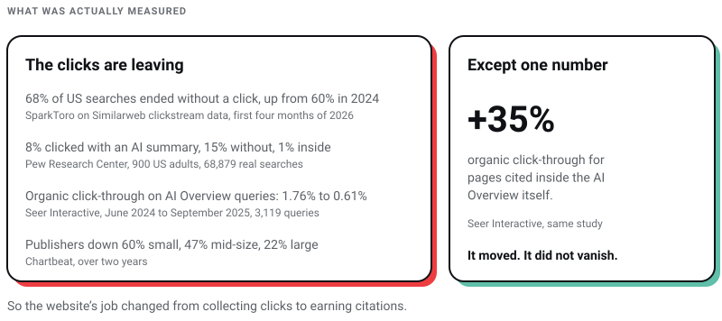
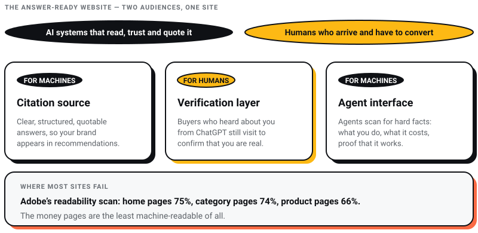

Digital Marketing
Digital Marketing
Why ChatGPT Recommends Your Competitor and Not You (The 5-Gap Diagnostic)
Discover the 5 reasons ChatGPT recommends your competitors instead of your business—and how to improve AI visibility, SEO, GEO, and AEO.

A client asked me this on a call last month:
“Khurshid, everyone just asks ChatGPT now. Do we even need a website anymore?”
He runs a business doing serious revenue. He was not being lazy. He was looking at the same data everyone is looking at. Small publishers have lost 60% of their search referrals over two years, per Chartbeat data given to Axios in March 2026. Clicks are disappearing everywhere.
So his question deserved a real answer, not an agency owner defending his own product.
The better question today is whether your business is investing in AI search optimization. Because in 2026, simply having a website isn’t enough. It has to be discoverable by AI.
I run Pixel Street. We design and build for brands like Coca-Cola, ITC, and Marico. Websites are literally what we sell. Which is exactly why I am going to argue this with data from Cloudflare and Adobe, not with my opinion.
Because the data says something most people have not caught up to yet.
Let me walk you through it.
Yes, you still need a website in 2026. You need it more than before, but for a different job. AI assistants like ChatGPT and Gemini can only recommend businesses they can read about. Your website is the primary source they read. No website means no citation. No citation means you never enter the buyer’s shortlist. The website’s job has changed from collecting clicks to earning citations.
This shift is exactly why AI search optimization has become one of the most important digital marketing priorities for businesses.
That is the 60-second version.
Now the part that actually matters. The why.

I will not sugarcoat this. The traffic drop is real. I have seen it in client dashboards.
The numbers. Before them, one you should stop repeating: the Gartner forecast that search volume would fall 25% “by 2026”. That was a February 2024 prediction, its deadline has passed, and quoting a forecast about the present as if it measured the present is a trick I would call out in someone else’s deck. Here is what has actually been measured.
One number in the Seer study points the other way, and it is the one this whole post rests on. Pages that got cited inside the AI Overview saw organic click-through go up 35%. The click did not disappear. It moved to whoever the machine named.

One of our FMCG clients watched blog impressions stay flat while clicks slid down month after month. Nothing was broken. Rankings were fine.
Google was answering the question before anyone reached the page.
So if your website’s only job was collecting informational clicks, that job is dying. I have said this before, and I will say it again: SEO as we know it will not matter in three to four years.
But here’s the thing.
Collecting clicks was never the real job. And what replaced it is bigger.
On June 3, 2026, Cloudflare’s CEO Matthew Prince shared a number that should change how every founder thinks about their website.
For the first time in internet history, bots passed humans.
Cloudflare Radar showed automated traffic at 57.5% of requests for HTML content. Humans were at 42.5% (Forbes, June 2026). Prince had predicted this crossover for late 2027. It arrived 18 months early.

Why should you care?
Because a large share of those bots are AI agents researching purchases for real buyers. Prince explained the difference in one line: a human shopping for something visits maybe 5 websites. An AI agent doing the same task can visit up to 5,000.
Your website did not lose its audience. Your audience changed form.
Think of it like a trade show. Earlier, buyers walked the floor themselves. Now they send a scout who inspects every booth, takes notes, and reports back with a shortlist of three.
No booth, no notes. No notes, no shortlist.
And the mechanism underneath is simple. AI models can only cite what exists. When ChatGPT answers “best design studio for FMCG brands in India,” it builds that answer from content already published on the open web. If you are not publishing, you are not in the dataset.
You are not losing the pitch. You were never in the room.
The obvious pushback: if AI answers everything, is the leftover traffic even worth anything?
Adobe analyzed over 1 trillion visits to US retail sites for its Q2 2026 AI Traffic Report. Three findings stand out:
These are Adobe’s March numbers rather than its newest, because that middle finding needs a like-for-like March-to-March comparison to mean anything. Adobe’s May update puts the conversion gap wider still, at 54%.

Shopify’s own Q1 2026 data points the same way. AI-referred visitors convert at nearly 50% higher rates than organic search on product pages, and AI-referred orders carry 14% higher average order values. First-party numbers from the platform running the checkout, which makes them the hardest figures here to argue with.
The reason is simple. The chat does the research. By the time someone clicks through from ChatGPT, they have compared options, asked follow-up questions, and narrowed the field.
They arrive half-decided.
AI did not kill your traffic. It filtered it. Fewer window shoppers, more serious buyers.
The old game was volume. The new game is being the site those buyers land on.
Let me tell you something from experience.
I lost two companies before Pixel Street. I know exactly what it feels like when the ground you built on turns out not to be yours.
Most businesses in India are repeating that mistake digitally. Instagram can change its algorithm tomorrow. Marketplaces can raise commissions next quarter. AI platforms decide who gets recommended with zero explanation and no appeals process.
We felt a small version of this ourselves recently. We spent weeks untangling admin access to a business page on Meta. One platform hiccup, and an asset we had invested years in was suddenly out of reach.
Your website is the only property in that list with your name on the deed.
You control the narrative, the data, the pricing display, and the conversion path. Nobody can throttle it, ban it, or bury it under an algorithm update.
In a world where discovery is controlled by AI gatekeepers, the one surface you fully control becomes more valuable, not less. It is the difference between owning your office and hoping the landlord renews your lease.
So websites still matter. But the job changed completely.
I call the new standard the Answer-Ready Website. One-line definition: a site built so AI systems can read it, trust it, and quote it, while the humans who arrive from those AI answers can convert on it.
Two audiences. One site.
The old website was a brochure for human eyes. The Answer-Ready Website has three jobs:
Most Indian websites fail all three.

Adobe ran readability scans on retail sites and found product pages scoring 66% on AI readability, the worst of any page type. Homepages managed 75%, category pages 74%. A third of the content on the money pages is invisible to machines.
India is not better placed. NeuGenM audited the country’s top 100 brands across ChatGPT, Gemini and Claude and found 99.2% recognised by name, but only 12.4% recommended when the buyer asked about the category rather than the brand (Afaqs, July 2026). Not one of the hundred scored above a C.
That is not a traffic problem. That is a shortlist problem.
AI search optimization isn’t about tricking ChatGPT or Google’s AI Mode. It’s about making your business easy for AI systems to understand, verify, and confidently recommend.
This is the checklist we run at Pixel Street. No theory. Start this week.
Step 1: Put a direct answer at the top of every important page. AI engines extract the first clear answer they find. Open every service page with a 40 to 70 word plain answer to the question that page exists for. Explain after, not before.
Step 2: Publish your pricing. Uncomfortable, I know. But agents hunt for hard facts, and hidden pricing reads as low confidence. We publish our own anchors openly. Websites from Rs. 50,000. Social media retainers from Rs. 35,000 a month. The leads that reach us now arrive pre-filtered and serious.
Step 3: Ungate your proof. Case studies behind a download form are invisible to AI. Put results, numbers, and client names (with permission) in plain HTML on the page.
Step 4: Keep schema markup, and stop believing what you were told about it. I had this step recommending FAQPage schema as an AI-visibility play. Google has since said the opposite in its own words: “Structured data isn’t required for generative AI search, and there’s no special schema.org markup you need to add” (Google Search Central, 15 May 2026). FAQ rich results were dropped from Search on 7 May 2026, so that route to extra SERP space is closed too. Keep Organization, LocalBusiness and Service markup, because unambiguous business facts are worth having and Article markup still earns rich results. Stop paying anyone for schema as an AI-citation tactic.
Step 5: Check what AI can actually read. JavaScript-heavy sites often serve half-empty pages to AI crawlers. We build on Next.js with server rendering for exactly this reason. Test yourself: paste your URL into an AI assistant and ask it to describe your business. A thin answer means thin machine-readable content.
Step 6: Build entity consistency. Same business name, same description, same details across your site, Google Business Profile, LinkedIn, and directories. AI engines cross-check sources before trusting one. Contradictions kill confidence.
Step 7: Run a monthly Citation Audit. Pick 15 to 20 questions your buyers actually ask. Ask them on ChatGPT, Perplexity, and Google’s AI Mode every month. Record whether you appear, who does, and which pages get cited.
That last step is your new rank tracker. Forty-five minutes a month. Costs nothing.
India is ChatGPT’s second-largest market on earth. 100 million weekly active users, behind only the United States, and the largest student user base of any country (Sam Altman, February 2026).
You will also hear that India has the world’s highest AI adoption rate, at 59% of the population. No survey I could find produces that figure, and the honest picture is less flattering. Microsoft’s 2026 diffusion research puts India at 17.6% of working-age population, 64th in the world, marginally below the global average. Repeating a patriotic-sounding number nobody can source is exactly the kind of page I am telling you not to publish.
Your customers are not slowly warming up to AI search. They are already there. D2C founders across India report the same pattern: customers arrive saying they asked ChatGPT, then cross-check on a marketplace before buying.
The first battle is no longer fought on your website or on the shelf. It is fought inside an AI answer you never see.
And the window is closing. AI-led discovery currently favors incumbents with strong, consistent records online. Every month a challenger brand stays unstructured, the incumbents’ lead compounds.
The good news is that almost nobody in the Indian mid-market has done steps 1 through 7 yet.
The field is open. For now.
You do not need to overhaul everything this quarter.
Run the Citation Audit from Step 7 today. Twenty questions, three AI platforms, one spreadsheet.
If your brand shows up, protect the lead. If it does not, you now know exactly what your website’s new job is.
Businesses that invest in AI search optimization today will have a significant advantage as AI becomes the default way customers discover brands.
Four years ago I made a cold call to ITC with a fancy deck and zero credibility. Today we design for them. Every advantage we have came from showing up before it was obvious.
AI search is that moment again. Show up early.
Next in this series: how to get your brand mentioned by ChatGPT. That one turns the audit into a repair plan. If a competitor keeps surfacing where you do not, go straight to the five-gap diagnostic. And if someone is selling you AEO and GEO as separate retainers on top of your SEO, I have taken that pitch apart.
Do websites still get traffic in 2026?
Yes, but less of it and higher quality. Zero-click search removed casual informational visits: 68% of US Google searches ended without a click in early 2026. What remains converts better. Adobe measured AI-referred retail visitors converting 42% better than non-AI traffic in March 2026, with 37% more revenue per visit, and Shopify measures a similar gap on its own product pages.
Can ChatGPT recommend my business if I don’t have a website?
Realistically, no. AI assistants build answers from published web content and third-party mentions. Without a website, there is no primary source for AI to read, verify, or cite. Social profiles alone rarely carry enough structured detail.
Is social media a replacement for a website?
No. Social platforms drive awareness but sit on rented land with changing algorithms. Your website is the only owned surface where you control content, data, pricing display, and conversion. It is also the primary source AI engines read.
What makes a website AI-ready?
Direct answers at the top of each page, published pricing, ungated proof, server-rendered content machines can read, consistent business details across the web, and honest headings. Schema helps machines parse your business facts but Google says it is not required for AI search, so treat it as hygiene rather than a lever. Extractable by machines, convincing to humans.
How do I check if AI can read my website?
Two quick tests. Ask an AI assistant to describe your business from your URL and judge the accuracy. Then view your page source: if your core content is not visible in the raw HTML, many AI crawlers cannot see it either.
10 min read 20 cited sources Web Design
Author
Khurshid Alam is the founder of Pixel Street, an AI-native design & development studio. Design thinking on weekdays and spreadsheets on weekends.
He writes about growth, design, and AI, mostly because someone has to say the quiet parts out loud.
Digital Marketing
Discover the 5 reasons ChatGPT recommends your competitors instead of your business—and how to improve AI visibility, SEO, GEO, and AEO.
 WEB DEVELOPMENT
WEB DEVELOPMENT
AI website builders are fast, but are they right for your business? Discover where they excel, where they fail, and when custom development is the…
 Web Design
Web Design
In the complex world of website creation, the roles of web design vs web development stand out for their unique yet interlinked functions.…